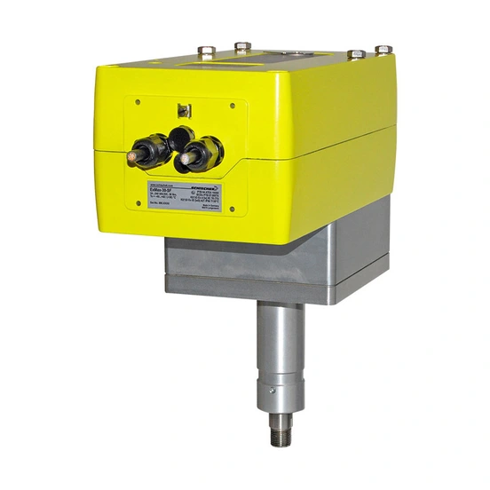

Schischek là thương hiệu actuator và sensor cho hệ thống HVAC tại khu vực nguy hiểm (hazardous/classified locations) thuộc danh mục Rotork. Range Max gồm ba cấp chứng nhận khu vực (ExMax, RedMax, InMax) cho actuator part-turn van/damper, còn dòng sensor (Cos) đo nhiệt độ, độ ẩm, áp suất. Bài viết phân biệt vai trò actuator/sensor và tiêu chí chọn theo zone, class, temperature class và tín hiệu.

Trả lời nhanh
- ExMax: explosionproof cho Zone 1, 2, 21, 22 (Gas và Dust); RedMax: explosionproof cho Zone 2, 22; InMax: khu vực an toàn (safe area).
- Actuator Max size S: torque 45-270 in-lbs; size M: 270-1.350 in-lbs, có hoặc không spring return.
- Điều khiển on-off/3-vị trí hoặc modulating 0-10 VDC/4-20 mA tùy model.
- Sensor Schischek (dòng Cos: ExCos/RedCos/InCos) đo nhiệt độ, độ ẩm, áp suất/chênh áp — khác vai trò với actuator.
- Certificate (ATEX/IECEx/CSA/UL) khác nhau theo từng model/size — phải kiểm tra riêng, không suy đoán chung cho cả range Max.
Actuator và sensor Schischek là gì
Range Max là actuator part-turn direct-coupling, vỏ nhôm IP66, có manual override tích hợp, dùng cho van và damper trong hệ thống HVAC. Actuator có 3 cấp chứng nhận: ExMax (explosionproof Zone 1/2/21/22), RedMax (explosionproof Zone 2/22) và InMax (khu vực an toàn). Có tùy chọn spring-return failsafe, vỏ inox, heater cho môi trường nhiệt độ thấp và sơn phủ offshore/marine.
Sensor Schischek (dòng Cos: ExCos cho Zone 1/2/21/22, RedCos cho Class I Div 2/Zone 2, InCos cho khu vực an toàn NEMA 4X/IP66) đo và truyền tín hiệu analog nhiệt độ, độ ẩm, áp suất hoặc chênh áp về hệ thống điều khiển, không cần mạch an toàn tách biệt (intrinsically safe circuit) trong tủ điều khiển, theo tài liệu brochure kỹ thuật.
Ngoài dòng Cos (đo tín hiệu analog), Schischek còn có ExSens — cảm biến chuyển mạch loại passive, potential-free, dùng kèm module chuyển mạch Ex-i 1 hoặc 2 kênh ExBin-A1/A2 (Zone 1/2/21/22) hoặc RedBin-A1/A2 (Zone 2/22) để đưa tín hiệu on/off từ tối đa 2 cảm biến ExSens về tủ điều khiển qua mạch intrinsically safe. Đây là vai trò khác với sensor analog dòng Cos: ExSens chỉ truyền trạng thái chuyển mạch (switching status), không truyền giá trị đo liên tục.
Bảng torque và điều khiển actuator Max
| Size | Torque | Thời gian vận hành 90° | Chế độ điều khiển |
|---|---|---|---|
| S | 45–270 in-lbs | 3/15/30/60 giây (tùy cấu hình) | On-off, 3-vị trí, hoặc modulating 0-10 VDC/4-20 mA |
| M | 270–1.350 in-lbs | 40/60/90/120 giây | On-off, 3-vị trí, hoặc modulating 0-10 VDC/4-20 mA |
Có tùy chọn feedback 2 limit switch (5°/85°) hoặc feedback analog 0-10 VDC/4-20 mA, và bản spring return (failsafe) với thời gian đóng nhanh khoảng 1-10 giây tùy cấu hình.
Tiêu chí chọn actuator/sensor theo khu vực nguy hiểm
- Zone/Class khu vực lắp đặt: xác định Zone 1/2/21/22 (ATEX/IECEx) hoặc Class I/II/III Division 1/2 (Bắc Mỹ) để chọn ExMax, RedMax hoặc InMax.
- Torque yêu cầu: đối chiếu torque van/damper với dải size S (45-270 in-lbs) hoặc size M (270-1.350 in-lbs).
- Temperature class (T-rating): xác nhận T-rating phù hợp với môi trường khí/bụi dễ cháy tại vị trí lắp đặt, theo certificate cụ thể của model.
- Yêu cầu fail-safe: nếu cần về vị trí an toàn khi mất điện, chọn bản spring-return.
- Tín hiệu điều khiển/feedback: xác nhận on-off/3-vị trí hoặc modulating (0-10 VDC/4-20 mA), và loại feedback (limit switch hoặc analog).
- Vai trò actuator hay sensor: nếu cần đo nhiệt độ/độ ẩm/áp suất, chọn dòng sensor Cos tương ứng (ExCos/RedCos/InCos) thay vì actuator Max.
Model và range liên quan
| Model/range | Lý do liên quan | Trang sản phẩm |
|---|---|---|
| Max (ExMax/RedMax/InMax) | Actuator part-turn chính trong bài | HVAC Actuators Rotork |
| Max+LIN | Lựa chọn khi cần failsafe linear valve actuator thay vì part-turn | HVAC Actuators Rotork |
| Run | Lựa chọn actuator linear valve khác trong danh mục HVAC | HVAC Actuators Rotork |
Mua actuator/sensor Schischek chính hãng tại Việt Nam
Fast Group Engineering là đơn vị cung cấp sản phẩm Rotork chính hãng tại Việt Nam, đầy đủ giấy tờ CO/CQ, catalogue và datasheet theo từng lô hàng. Đội ngũ kỹ thuật hỗ trợ đối chiếu zone/class, torque và certificate theo model cụ thể trước khi báo giá.
Câu hỏi thường gặp
ExMax, RedMax và InMax khác nhau ở đâu?
Cả ba đều thuộc range Max (actuator part-turn direct-coupling) nhưng khác cấp chứng nhận khu vực: ExMax là bản explosionproof cho Zone 1, 2, 21, 22 (Gas và Dust); RedMax là bản explosionproof cho Zone 2, 22 (Gas và Dust); InMax dùng cho khu vực an toàn (safe area, không chứng nhận Ex).
Actuator Schischek và sensor Schischek khác nhau ở vai trò gì?
Actuator (dòng Max: ExMax/RedMax/InMax) vận hành cơ cấu van/damper theo tín hiệu điều khiển. Sensor (dòng Cos: ExCos/RedCos/InCos) đo và truyền tín hiệu analog nhiệt độ, độ ẩm, áp suất hoặc chênh áp về hệ thống điều khiển — hai vai trò khác nhau, không thay thế nhau.
Dải torque của actuator Max là bao nhiêu?
Theo brochure kỹ thuật hiện hành, size S có torque 45-270 in-lbs (tương đương khoảng 5-30 Nm) và size M có torque 270-1.350 in-lbs (khoảng 30-152 Nm), có hoặc không có spring return, với các mode điều khiển on-off/3-vị trí hoặc modulating 0-10 VDC/4-20 mA.
Cần thông tin gì để chọn đúng zone/class khi đặt hàng actuator Ex?
Cần xác định zone/division khu vực lắp đặt (ví dụ Zone 1/2/21/22 hoặc Class I/II/III Div 1/2), nhiệt độ môi trường, temperature class (T-rating) yêu cầu, tín hiệu điều khiển và nguồn điện. Certificate cụ thể (ATEX/IECEx/CSA/UL) phải kiểm tra theo đúng model và size, không suy đoán từ range chung.
Cần gửi thông tin gì để chọn đúng actuator hoặc sensor Schischek?
Gửi loại thiết bị cần (actuator van/damper hay sensor đo lường), zone/class khu vực lắp đặt, torque hoặc dải đo yêu cầu, tín hiệu điều khiển và nhiệt độ môi trường cho Fast Group Engineering để đối chiếu trước khi báo giá.
Gửi zone/class để chọn đúng actuator hoặc sensor Schischek
Để kiểm tra đúng mã, vui lòng gửi loại thiết bị, zone/class khu vực lắp đặt, torque/dải đo, tín hiệu điều khiển và nhiệt độ môi trường cho Fast Group Engineering qua Zalo/điện thoại (+84) 938 888 958 hoặc email minhduc@fastgroup.vn.
Nguồn tham khảo
- rotork.com/en/products/hvac-actuators và /hvac-actuators/max — truy cập 19/07/2026 (cấu trúc range Max/ExMax/RedMax/InMax, Max+LIN, Run, danh mục certificate/datasheet theo model).
- PUB113-002/PUB113-001, Schischek Product Brochure (Technical Short Information) — bảng torque/control mode ExMax size S và M, giới thiệu dòng sensor ExCos/RedCos/InCos.
- PUB113-002, trang 29 — cảm biến chuyển mạch ExSens dùng với module ExBin-A1/A2, RedBin-A1/A2.
Ghi chú nội bộ: (1) Bảng torque trong bài lấy từ PUB113-002/PUB113-001 (catalogue kỹ thuật, không ghi rõ ngày phát hành trong phần đã trích) — đã đối chiếu với danh mục datasheet hiện hành trên trang "Max" (các file PUB113-439 đến PUB113-468) để xác nhận tên model ExMax/InMax/RedMax vẫn đang lưu hành, nhưng CHƯA mở từng datasheet riêng để xác nhận torque từng biến thể cụ thể (Y/F1/F3/BF/3P/R/CY). (2) Đã tìm và xác nhận "ExSens" trong PUB113-002 trang 29 — là cảm biến chuyển mạch passive dùng kèm module ExBin-A1/A2 hoặc RedBin-A1/A2, KHÁC với dòng sensor analog Cos (ExCos/RedCos/InCos). Reviewer cần xác nhận thêm với Rotork về datasheet/certificate riêng của ExSens nếu khách hỏi cụ thể, vì bài chỉ dựa trên đoạn mô tả ngắn trong catalogue, chưa có datasheet đầy đủ.